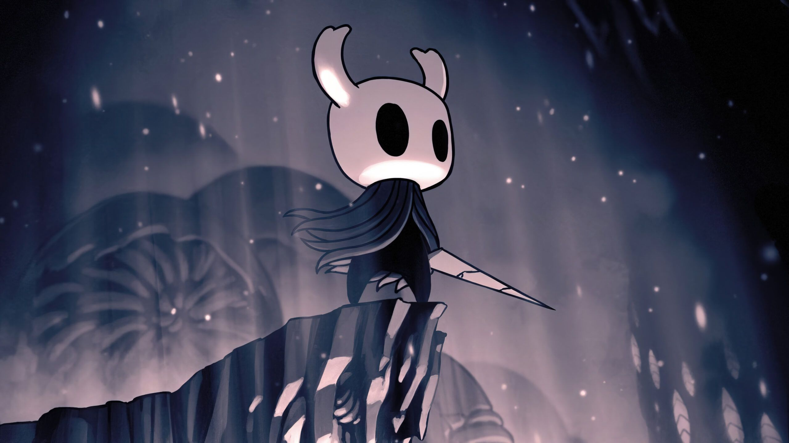

Más información:
DLCs
Con la compra del juego te vienen cuatro DLCs gratis que serian:
- Sueños ocultos
- La Compañía de Grimm
- Saviavida
- Buscador de Dioses

Empecemos desde lo mas básico, que es Hollow Knight:
Hollow Knight es un videojuego perteneciente al género metroidvania desarrollado y publicado por Team Cherry, en el cuál tomaremos control de el personaje principal, el caballero, una especie de cabeza de insecto, con capa de aspecto raido, un cuerpo de un negro plano y que porta un aguijón que usa como espada.
Ya de inicio después de la cinemática de presentación nos harán hacer el tutorial mientras avanzamos para salir de la cueva donde empezamos el juego y salir a Bocasucia, una antiguo pueblo de paso entre el mundo exterior y el reino de Hallowest, un reino formado por insectos, caido en decadencia despúes de que su antiguo gobernante, el Rey Pálido, desapareciera y con ello, sus habitantes parecieran estar contrayendo una extraña infección que hace que los ciudadanos pierdan su inteligencia y se pongan a atacar a los que aun se mantengan sin infectar, vuelvan a un estado.
Bocasucia es un lugar que se puede considerar tu lugar seguro en esta aventura debido a que al ser una ciudad fronteriza y con pocos habita la mayoria de NPCs, en ella al inicio nos encontraremos a un insecto anciano que nos instara a no explorar pero el juego trata de la busqueda de la historia de este reino, de explorar sus inmediaciones y luchar con los diferentes obstaculos que nos encontraremos todo para intentar salvar este reino de la completa perdición a la que esta destinado
Con la compra del juego te vienen cuatro DLCs gratis que serian:
Por Manel Ortiz Queral